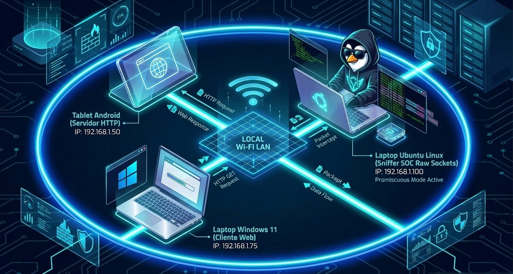

📡 Misión 01: Sniffer Bare-Metal & Filtro L4 (Raw Sockets)
Inspección profunda de tramas Ethernet e IPv4 a nivel de bits utilizando Sockets Crudos (AF_PACKET) en Python sobre Linux, erradicando el uso de librerías de terceros.
🌐 Introducción al Análisis de Red
Un sniffer o analizador de tráfico es un programa diseñado para capturar y examinar la información que viaja a través de una red informática en tiempo real. Esta herramienta es fundamental tanto para administradores de red como para analistas de ciberseguridad defensiva y auditores de sistemas, quienes habitualmente recurren a aplicaciones populares como Wireshark o Scapy para diagnosticar fallas o revisar la seguridad. Sin embargo, para entender verdaderamente cómo se mueven los datos sin depender de programas automáticos que hacen todo por nosotros, construimos nuestro propio sniffer desde cero utilizando únicamente las funciones nativas de Python sobre Linux.
🎯 Objetivos de Ingeniería y Fricción
El propósito de este módulo es comprender el desempaquetado de cabeceras de red desde la capa física hasta la capa de transporte (L2/L3/L4) desempaquetando structs de C directamente en Python. Aplicamos fricción deliberada al prohibir el uso de Wireshark o Scapy, obligándonos a procesar los bytes en binario puro para entender el flujo real de datos sin depender de abstracciones automáticas de terceros.
Ethernet (Capa 2)
Desglose de MAC Origen, MAC Destino y EtherType (0x0800 para IPv4) directamente de la trama cruda.
IP / TCP / UDP (Capa 3 y 4)
Extracción manual de direcciones IP, números de puerto, banderas SYN/ACK y cálculo del Checksum sin Wireshark.
💻 Código Fuente: sniffer.py
¿Por qué desarrollamos este Sniffer en Python?
- Librería estándar nativa: Permite interactuar directamente con la interfaz del kernel Linux mediante llamadas a bajo nivel (
socket.AF_PACKET) sin instalar paquetes de terceros. - Manipulación binaria simplificada: El módulo nativo
structfacilita la des-serialización de campos y cabeceras binarias (struct.unpack) con una sintaxis limpia e intuitiva. - Desarrollo y prototipado ágil: Ofrece la velocidad ideal para laboratorios de auditoría y análisis forense rápido sin la complejidad de compilación manual de C.
import socket
import struct
import sys
def main():
# Validar argumento de puerto
if len(sys.argv) < 2:
print("Uso: sudo python3 sniffer.py ")
sys.exit(1)
filtro_puerto = int(sys.argv[1])
try:
conn = socket.socket(socket.AF_PACKET, socket.SOCK_RAW, socket.ntohs(3))
except PermissionError:
print("[-] Error: Se requieren privilegios de administrador (sudo).", file=sys.stderr)
sys.exit(1)
except AttributeError:
print("[-] Error: AF_PACKET solo disponible en Linux.", file=sys.stderr)
sys.exit(1)
print(f"[+] Sniffer activo... Escuchando tráfico en el puerto {filtro_puerto}")
while True:
try:
raw_data, addr = conn.recvfrom(65535)
except KeyboardInterrupt:
print("\n[+] Sniffer detenido por el usuario.")
break
if len(raw_data) < 14:
continue
# Cabecera Ethernet (14 bytes)
eth_header = raw_data[:14]
dest_mac, src_mac, eth_proto = struct.unpack('!6s6sH', eth_header)
def format_mac(bytes_addr):
return ':'.join(f'{b:02x}' for b in bytes_addr)
# IPv4 (EtherType 0x0800)
if eth_proto == 0x0800 and len(raw_data) >= 34:
ip_header_raw = raw_data[14:34]
ip_data = struct.unpack('!BBHHHBBH4s4s', ip_header_raw)
version_ihl = ip_data[0]
version = version_ihl >> 4
ihl = (version_ihl & 0xF) * 4
ttl = ip_data[5]
protocol = ip_data[6]
src_ip = socket.inet_ntoa(ip_data[8])
dest_ip = socket.inet_ntoa(ip_data[9])
proto_name = "OTRO"
if protocol == 1:
proto_name = "ICMP"
elif protocol == 6:
proto_name = "TCP"
elif protocol == 17:
proto_name = "UDP"
src_port = dest_port = None
# Extraer puertos si es TCP o UDP
if protocol == 6 and len(raw_data) >= 14 + ihl + 20:
tcp_header = raw_data[14+ihl:14+ihl+20]
src_port, dest_port = struct.unpack('!HH', tcp_header[:4])
elif protocol == 17 and len(raw_data) >= 14 + ihl + 8:
udp_header = raw_data[14+ihl:14+ihl+8]
src_port, dest_port = struct.unpack('!HH', udp_header[:4])
# Filtrar por puerto
if src_port == filtro_puerto or dest_port == filtro_puerto:
print(f"\n[+] Trama Detectada:")
print(f" |- MAC Origen: {format_mac(src_mac)} -> MAC Destino: {format_mac(dest_mac)}")
print(f" |- IP Versión: {version} | Tamaño Cabecera: {ihl} bytes | TTL: {ttl}")
print(f" |- Protocolo: {proto_name} ({protocol})")
print(f" |- Ruta: {src_ip}:{src_port} -> {dest_ip}:{dest_port}")
if __name__ == "__main__":
main() 📊 Bitácora de Salida SOC & Análisis Forense
Montaje del Laboratorio de Prácticas
Para validar el funcionamiento del sniffer en un escenario real de red local, se estructuró un laboratorio físico compuesto por tres dispositivos:
- Tablet Android (Servidor Web): Se alojó una página web básica mediante un servidor HTTP local (IP
192.168.1.50), haciéndola accesible para cualquier dispositivo dentro de la misma red Wi-Fi. - Laptop Windows 11 (Cliente Web): Actuó como el dispositivo cliente (IP
192.168.1.75), generando peticiones web (HTTP GET en el puerto 80) dirigidas hacia la dirección IP de la tablet Android. - Laptop Ubuntu Linux (Nodo Sniffer SOC): Ejecutó el script
sniffer.pyen modo promiscuo (IP192.168.1.100), interceptando e inspeccionando las tramas binarias que circulaban por el medio físico sin interferir en la comunicación.
Diagrama del Laboratorio

Resultados de las Pruebas de Captura
$ sudo python3 sniffer.py 80
[+] Sniffer activo... Escuchando tráfico en el puerto 80
[+] Trama Detectada:
|- MAC Origen: A4:BB:6D:4E:10:99 -> MAC Destino: 00:15:5D:01:AF:22
|- IP Versión: 4 | Tamaño Cabecera: 20 bytes | TTL: 128
|- Protocolo: TCP (6)
|- Ruta: 192.168.1.75:54322 -> 192.168.1.50:80
[+] Trama Detectada:
|- MAC Origen: 00:15:5D:01:AF:22 -> MAC Destino: A4:BB:6D:4E:10:99
|- IP Versión: 4 | Tamaño Cabecera: 20 bytes | TTL: 64
|- Protocolo: TCP (6)
|- Ruta: 192.168.1.50:80 -> 192.168.1.75:54322
Explicación del Resultado
El sniffer capturó exitosamente el intercambio bidireccional de paquetes HTTP en el puerto 80 entre el cliente Windows 11 y el servidor Android, validando la inspección de tramas Ethernet e IP sin alterar la comunicación.
🛡️ Conclusión de Defensa (Blue Team)
El análisis de sockets crudos revela la huella exacta de conexiones iniciadas en la red local. Al inspeccionar manualmente las banderas TCP (SYN/ACK), el analista SOC puede detectar barridos de puertos y anomalías en la capa de red antes de que lleguen al espacio de usuario.